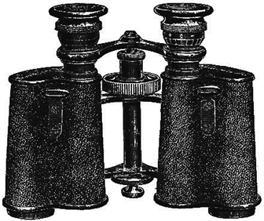

VISION
" Mais qu'est-ce qu'un conte, sinon une vision différente de la réalité ? "
Jean VAN HAMME
Jean VAN HAMME
Lorsque les gens viennent consulter un hypnotiseur, ils sont souvent pris dans ce paradoxe de vouloir trouver une solution et d'affirmer en même temps qu'il n'en existe aucune. Il faudrait que quelque chose bouge mais sans rien changer ! Alors ces gens se tournent vers l'hypnose avec la croyance passive qu'il n'y a qu'à attendre que leur inconscient fasse tout le boulot. Le rôle de l'hypnologue, alors, n'est pas de cautionner cette passivité en proposant une forme "d'incantation hypnotique" mais de faciliter les possibles en ouvrant une autre vision sur le monde du sujet et l'hypnose permet cela.
Lorsqu'un entrepreneur de vie s'offre l'expérience d'une illumination ou d'une vision, il se laisse inspirer par un au-delà de lui-même. Construire sa vision, c'est accepter de franchir des frontières du raisonnable, s'ouvrir à d'autres concepts du monde et libérer les énergies créatrices. Pour qu'il y ait vision, il faut que l'esprit puisse errer et imaginer par delà les frontières connues et considérer les utopies. C'est s'autoriser à laisser place à l'imaginaire et à la fantaisie. Cependant, la vision ne doit pas être un fantasme mais une sorte de mouvement de la pensée dénué d'interdits entre le temps et l'espace qui permet d'inventer et de mettre en œuvre ce qui jusque là paraissait impossible.
La vision nous rapproche de nos valeurs et nous éloigne et de nos croyances limlitantes. Nous avons la confirmation d'être dans la vision lorsqu'il y a accord profond entre le but à atteindre et nos propres ressources. Elle met en mouvement tout notre être intérieur, qui pourra ainsi ressentir la possibilité de s'exprimer dans toute sa plénitude. Cet accord entre le but à atteindre et notre identité peut éveiller en nous un déclenchement d'énergie et de capacités parfois insoupçonnées.
Lorsqu'un entrepreneur de vie s'offre l'expérience d'une illumination ou d'une vision, il se laisse inspirer par un au-delà de lui-même. Construire sa vision, c'est accepter de franchir des frontières du raisonnable, s'ouvrir à d'autres concepts du monde et libérer les énergies créatrices. Pour qu'il y ait vision, il faut que l'esprit puisse errer et imaginer par delà les frontières connues et considérer les utopies. C'est s'autoriser à laisser place à l'imaginaire et à la fantaisie. Cependant, la vision ne doit pas être un fantasme mais une sorte de mouvement de la pensée dénué d'interdits entre le temps et l'espace qui permet d'inventer et de mettre en œuvre ce qui jusque là paraissait impossible.
La vision nous rapproche de nos valeurs et nous éloigne et de nos croyances limlitantes. Nous avons la confirmation d'être dans la vision lorsqu'il y a accord profond entre le but à atteindre et nos propres ressources. Elle met en mouvement tout notre être intérieur, qui pourra ainsi ressentir la possibilité de s'exprimer dans toute sa plénitude. Cet accord entre le but à atteindre et notre identité peut éveiller en nous un déclenchement d'énergie et de capacités parfois insoupçonnées.

Ainsi, remplir notre vie d'une multitude d'objectifs à court terme est parfois la simple expression du doute sur notre capacité à avoir une vision car elle se réserve le long terme et la tenue dans temps. Etre raisonnable nous fait entrer dans une dynamique castratrice, être raisonnant nous fait entrer dans une dynamique créatrice.
Une réalité personnelle de ce que nous pensons pouvoir faire ou de ce que nous pensons ne pas pouvoir faire s’impose à nous par une interprétation souvent subjective de ce que nous vivons. Nous regardons le monde au travers d'un cadre de compréhension dans lequel nous avons plus ou moins d’amplitude. C'est un cadre de conditionnements, qui, de manière plus ou moins consciente clôturent notre vie. Plus notre cadre est grand et plus nous pouvons être une personne ouverte, variée et disposant d’un potentiel, plus il est restreint et plus nos rêves sont petits ! Cet étiquetage de la vie, de nos expériences, de notre réalité est donc limité et limitant à ses propres fondements. Il y a un seuil haut et un seuil bas. Chaque personne étant unique, chacun a ses limites. D’un point de vue plus général, c’est ce qui fait que pour une même chose, certains la trouveront accessible et d’autres inaccessible. Question de limites personnelles et de vision du monde, en somme, de conditionnement !
Devenir visionnaire, cela commence en sortant du cadre !
Une réalité personnelle de ce que nous pensons pouvoir faire ou de ce que nous pensons ne pas pouvoir faire s’impose à nous par une interprétation souvent subjective de ce que nous vivons. Nous regardons le monde au travers d'un cadre de compréhension dans lequel nous avons plus ou moins d’amplitude. C'est un cadre de conditionnements, qui, de manière plus ou moins consciente clôturent notre vie. Plus notre cadre est grand et plus nous pouvons être une personne ouverte, variée et disposant d’un potentiel, plus il est restreint et plus nos rêves sont petits ! Cet étiquetage de la vie, de nos expériences, de notre réalité est donc limité et limitant à ses propres fondements. Il y a un seuil haut et un seuil bas. Chaque personne étant unique, chacun a ses limites. D’un point de vue plus général, c’est ce qui fait que pour une même chose, certains la trouveront accessible et d’autres inaccessible. Question de limites personnelles et de vision du monde, en somme, de conditionnement !
Devenir visionnaire, cela commence en sortant du cadre !
EN RELATION


OSER
TRANS MUER
(crise)
(non) CHOIX

PROJET
CROYANCE
(in) CONFORT